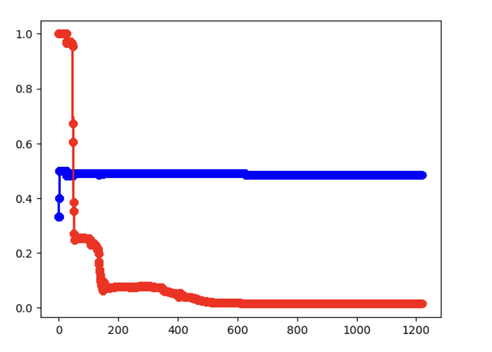

%%{init: {"theme": "base", "themeVariables": {"primaryColor": "#E3F2FD", "primaryTextColor": "#111", "primaryBorderColor": "#90CAF9", "lineColor": "#18A3A3", "secondaryColor": "#FFF3E0", "tertiaryColor": "#F3E5F5"}, "flowchart": {"curve": "basis", "padding": 35}, "fontSize": "18px"}}%%
flowchart TD
A["Phase 1: Law of Large Numbers "] --> B["Build H-gate Quantum Circuit "]
B --> C["Run on Simulator (20,000 shots) "]
B --> D["Run on IBMQ Hardware (20,000 shots) "]
C --> E["Cumulative P(0) Visualization "]
D --> E
E --> F["Compare Convergence Behavior "]
F --> G["Phase 2: Bayesian Inference "]
G --> H["Collect Measurement Results as CSV "]
H --> I["Compute Prior from First 50 Observations "]
I --> J["Iterative Bayesian Updating (20,000 rounds) "]
J --> K["Find MAP Estimate of P(0) "]
style A fill:#E3F2FD,stroke:#90CAF9
style B fill:#E3F2FD,stroke:#90CAF9
style C fill:#E8F5E9,stroke:#A5D6A7
style D fill:#FFF3E0,stroke:#FFCC80
style E fill:#F3E5F5,stroke:#CE93D8
style F fill:#F3E5F5,stroke:#CE93D8
style G fill:#FFF3E0,stroke:#FFCC80
style H fill:#FFF3E0,stroke:#FFCC80
style I fill:#FFF3E0,stroke:#FFCC80
style J fill:#FFF3E0,stroke:#FFCC80
style K fill:#FCE4EC,stroke:#F48FB1
Quantum Bayesian Inference
Quantum Bayesian Inference: Experimental Validation and Extensions · NCHU Department of Applied Mathematics
NSTC Undergraduate Research Project Project No. 112-2813-C-005-038-E · Advisor: Prof. Yu-Tsung Tai · Period: 2023/07 – 2024/02
Overview
This thesis investigated whether quantum computer outputs conform to Bayesian probability laws. Using IBM’s Qiskit framework on real IBMQ hardware and simulators, we tested the law of large numbers for quantum bit measurements and applied Bayesian updating to analyze qubit measurement outcomes.
The key finding: real quantum computers and simulators behave differently — the quantum computer’s cumulative probability showed a systematic drift away from the theoretical 0.5, raising fundamental questions about objective randomness in quantum states.
Methodology
Phase 1: Law of Large Numbers Verification
We applied a Hadamard gate (H-gate) to a single qubit, putting it into superposition state \(|+\rangle = \frac{1}{\sqrt{2}}(|0\rangle + |1\rangle)\), then measured it 20,000 times. If quantum measurements follow classical probability, the cumulative \(P(|0\rangle)\) should converge to 0.5.
| Setup | Backend | Shots | Expected \(P(0)\) |
|---|---|---|---|
| H-gate \(\rightarrow\) Measure | ibmq_qasm_simulator |
20,000 | 0.5 |
| H-gate \(\rightarrow\) Measure | ibm_osaka (real hardware) |
20,000 | 0.5 |
Simulator Result
The simulator’s cumulative probability converges smoothly to 0.5, perfectly following the law of large numbers:

Real Quantum Computer Result
The real quantum computer (IBM Osaka) shows a systematic downward drift — the cumulative probability does NOT converge to 0.5:

Key Finding: The simulator perfectly follows the law of large numbers, but the real quantum computer exhibits a persistent bias. This divergence suggests that either: (1) hardware noise introduces systematic error, (2) the sample size is insufficient, or (3) quantum superposition may not produce truly objective randomness.
Zoomed-in Comparison (1,000 shots)
A closer look at individual runs with 1,000 measurements each:

Simulator: Rapid, clean convergence to the theoretical 0.5 line.

IBMQ: Noticeably wider variance and slower convergence, with persistent oscillation.
Phase 2: Bayesian Inference on Quantum Outputs
In the second phase, we treated the quantum measurement outcomes as observed data and applied Bayesian updating to infer the most likely probability parameter \(\theta = P(|0\rangle)\).
Steps:
- Collected 20,000 measurement results from IBMQ as a binary sequence (0/1)
- Used the first 50 observations to construct the prior distribution over \(\theta\)
- Iteratively applied Bayes’ theorem for 19,950 rounds of updating
- Identified the MAP (Maximum A Posteriori) estimate of \(\theta\)
Bayesian Convergence

Bayesian Result: With prior density \(n = 50\), the MAP estimate converged to \(\theta \approx 0.483\) with posterior probability 0.955. This confirms the quantum hardware’s systematic bias — Bayesian inference correctly identifies that the true \(P(|0\rangle)\) on real hardware is NOT exactly 0.5.
Conclusions
| Aspect | Simulator | Real Quantum Computer |
|---|---|---|
| Law of Large Numbers | Perfectly satisfied | Violated (systematic drift) |
| Convergence to 0.5 | Yes (smooth) | No (biased toward ~0.49) |
| Bayesian MAP estimate | \(\theta \approx 0.500\) | \(\theta \approx 0.483\) |
| Variance | Low | High (noisy) |
Three possible explanations for the divergence:
- Insufficient sample size — 20,000 shots may not be enough for quantum hardware (limited by IBMQ queue constraints)
- Hardware noise and error — current IBMQ devices have gate errors, decoherence, and readout errors that introduce systematic bias
- Quantum randomness is not classical randomness — the superposition state may follow measurement-theoretic probability models (e.g., Gleason’s theorem) that don’t fully align with Kolmogorov’s axioms
Tech Stack: Python, Qiskit, IBMQ (ibm_osaka), matplotlib, csv · Grant: NSTC 112-2813-C-005-038-E
Source Code
The Qiskit programs developed for this research are available on GitHub:
- i_use_quantum_do_something_cool — Quantum circuit code, simulator/hardware comparison, Bayesian analysis notebooks